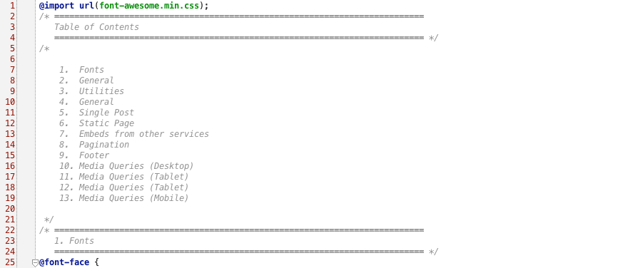
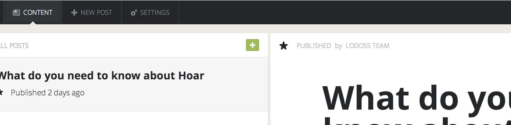

Hoar Ghost Theme
User Guide
- created: 01/24/2014
- latest update: 09/12/2014
- by: Anton Repjov
- email: theme.support@lodossteam.com
Thank you for purchasing our theme. If you have any questions that are beyond the scope of this help file, please feel free to email us theme.support@lodossteam.com. Thanks so much!
Installation
Ghost
You will need ghost, in order to use this theme. You can find ghost's download and installation instructions at Ghost.org.
Theme
Navigate into your ghost folder and simply move folder with theme into the content/themes/ directory.
To switch to your newly added theme:
- Restart Ghost. At the moment, Ghost won't notice that you've added a new folder tocontent/themes so you'll need to restart it
- Login to your Ghost admin, and navigate to /ghost/settings/general/
- Select your Theme name in the 'Theme' options dropdown
- Click 'Save'
- Visit the frontend of your blog and marvel at the new theme
That's all!
Features
- Ghost 0.5.1 compatible
- Static Pages support
- Featured Pages
- HTML5, CSS3 and Responsive Design
- Cross Browser Compatible (IE9-11, FF, Chrome, Opera, Safari and Mobile)
- Retina display ready
- Facebook and/or Disqus comments
- YouTube, Vimeo, SoundCloud support
- Social Media Sharing (Facebook, Twitter, Goolgle+)
- 500+ Google Fonts support
- Google Maps
- FontAwesome Icons
- Facebook Opengraph and Twitter Card
- Detailed HTML Documentation
- Technical Support
HBS FIles and Structure
This theme is fully responsive and look great on all modern devices. Based on theme font and it's size we chose max width of column equal to 660px for more comfortable reading text. Theme has a similar structre as below.
.
├── /assets
| └── /css
| ├── screen.css
| ├── /fonts
| ├── /images
| ├── /js
├── default.hbs
├── error.hbs
├── index.hbs[required]
├── post.hbs[required]
└── page.hbs
All *.hbs fiels are handlebars files. Handlebars is the templating language used by Ghost.
default.hbs
This is the default layout, or base template which contains all the boring bits of HTML that have to appear on every page – the <html>, <head> and <body> tags along with the {{ghost_head}} and{{ghost_foot}} helpers, as well as any HTML which makes up a repeated header and footer for the blog.
The default template contains the handlebars expression {{{body}}} to denote where the content from templates which extend the default template goes.
Page templates then have {{!< default}} as the very first line to specify that they extend the default template, and that their content should be placed into the place in default.hbs where {{{body}}} is defined.
index.hbs
This is the template for the homepage, and extends default.hbs. The homepage gets passed a list of posts which should be displayed, and index.hbs defines how each posts should be displayed.
The homepage has a large header which uses @blog global settings to output the blog logo, title and description. This is followed by using the {{#foreach}} helper to output a list of the latest posts.
post.hbs
This is the template for a single post, which also extends default.hbs.
In this theme the single post template has it's simple header then uses the {{#post}} data accessor to output all of the post details.
page.hbs
This is the template for static pages. If your theme doesn't have a page.hbstemplate, Ghost will use the standard post.hbs template for pages.
Pages have exactly the same data available as a post, they simply don't appear in the list of posts.
In order to comply DRY principle we split all common content on certain partials( partials/comments.hbs, partials/follow-block.hbs , partials/header.hbs, partials/menu-top.hbs, partials/post-header.hbs, partials/share-block.hbs)., partials/loop.hbs).
comments.hbs - this partial needs if you want to add comment block such as facebook or diqus(see: "How to add Disqus or Facebook comments" section)
follow-block.hbs - here you will able to change links to your social networks (see: "How to change social networks links" section)
loop.hbs - each post will be output using this markup
menu-top.hbs - here you will able to change links for static pages(see: "Top menu and static pages" section)
pagination.hbs - this is standard partial there you can change pagination view
CSS Files and Structure
We have following structure of css files:
font-awesome.min.css gives you scalable vector icons that can instantly be customized — size, color, drop shadow, etc
normalize.css is a generic reset file. Many browser interpret the default behavior of html elements differently. By using a general reset CSS file, we can work round this. This file also contains some general styling, such as anchor tag colors, font-sizes, etc. Keep in mind, that these values might be overridden somewhere else in the file.
The last one is screen.css contains all of the specific stylings for the page. The file is separated into sections using:

If you would like to edit a specific section of the site, simply find the appropriate label in the CSS file, and then scroll down until you find the appropriate style that needs to be edited.
OR if you use Chrome Browser
You can click right mouse button on any HTML element and select Inspect Element item in context menu
and you will see all css properties of this element and it's line position in css file
then just find this line in CSS file and change what you need.
JavaScript
This theme imports three Javascript files.
- jQuery jquery.js
- Custom scripts index.js
- jQuery is a Javascript library that greatly reduces the amount of code that you must write.
- Animation and other effects in this theme is carried out from the customs scripts. In this file we also added custom Google map generator, it build map based on special tag inserted in the post.
How to add Disqus or Facebook comments
If you need to add comments to your blog you can use one of 3th party scripts such as disqus or facebook. We stylized these scripts for you and they will looks great on your blog. In order to use comments you need just insert code which services provide and enjoy.
Steps:
- Get code from Facebook or Disqus
- Open "partials/comments.hbs" file using any text editor.
- Add code after <!-- insert your commentaries widget here -->
- Save file
- Open "post.hbs" file using any text editor.
- Find line 63 <div class="column-right author" style="display:none">
- Remove attribute style="display:none"
- Save file
- That is all
By default theme does not contain comments
How to insert Google map in post
If you need to show some place on the map, now you can do it very easy, we did a small js plugin for this.

So in order to show a map you just need to go to admin side and insert the following code in post editor.
<mapper>
{
"lat": 47.221860,
"lng": 38.922286,
"width": "100%",
"height": "200px",
"zoom": "16",
"markerTitle": "any text here",
"mapDraggable": false,
"scrollwheel": false
}
</mapper>
| Option | Description |
|---|---|
| lat | number |
| lng | Number |
| width | String. Examples: "100%", "20px" |
| height | String. Examples: "100%", "20px" |
| zoom | Number. Maps on Google Maps have an integer "zoom level" which defines the resolution of the current view. Zoom levels between 0 (the lowest zoom level, in which the entire world can be seen on one map) to 21+ (down to individual buildings) are possible within the default roadmap maps view. |
| markerTitle | String. Text which will be displayed by hover |
| mapDraggable | bool. default false. True if you want to make map draggable |
| scrollwheel | bool. default false. True if you need to make zoom by scroll wheel |
Featured pages
If you use Ghost 0.4 or greater you can mark any post as "featured", for this just click a star in CONTENT section on admin side.

Featured posts have a special nice ribbon.
Support
- Customization and installation services
- Support for third party software and plug-ins
Credits
jQuery - http://jquery.com/
Font Awesome - http://fortawesome.github.io/Font-Awesome/
Demo Images from unsplash.com - http://unsplash.com/
Gratitude
Once again, thank you so much for purchasing this theme. As I said at the beginning, I'd be glad to help you if you have any questions relating to this theme. No guarantees, but I'll do my best to assist. If you have a more general question relating to the themes on ThemeForest, you might consider visiting the forums and asking your question in the "Item Discussion" section.